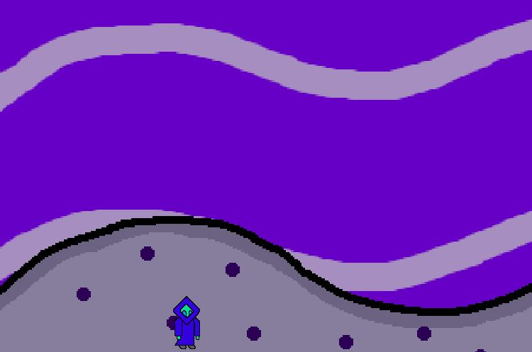

About
A simple game written in C++ using SDL2. It is supposed to be a 2D platformer. I am trying to make this game portable to many operating systems (Windows, MacOS, Linux and etc..). I can only support this game for Windows and Linux. This game is pre-alpha software. There are many features missing for it to be a complete game.

My Assets (Music, Art, and Soundeffects)

I created the music, art and soundeffects for this game. The assets are licensed under a Creative Commons Attribution 4.0 International License
.
Controls
- A -> move left
- D -> move left
- K -> jump
Closing
I hope to do more than this. This is my first time programming with SDL2. I have used C++ before. I am determined to get a fully functional game but it will take some time.